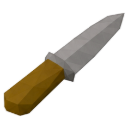
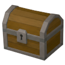

Fletching Knife
Tool
| Property | Value |
|---|---|
| Tool for | 🪶 Fletching |
| Value | 40 coins |
| Sells for | 5 coins each |
| High Alchemy | 7 coins |
| Market price | 120 coins (a guide for trading; shops and High Alchemy pay far less) |
| Stacks | No |
Sold at
| Shop | Zone | Price |
|---|---|---|
| 🧔 Ashvale General Store | 🌾 Ashvale | 120 coins |
Starter Chest
Every new character gets 1 in the 
Needed as a tool for
- 🪶 Cut Arrow Shafts (Birch)
- 🪶 Cut Arrow Shafts (Broadwood)
- 🪶 Cut Arrow Shafts (Duskwillow)
- 🪶 Cut Arrow Shafts (Amberwood)
- 🪶 Cut Arrow Shafts (Gravewood)
- 🪶 Cut Arrow Shafts (Spellwood)
- 🪶 Cut Arrow Shafts (Ancient Heartwood)
- 🪶 Cut Wooden Shortbow
- 🪶 Cut Apprentice Staff
- 🪶 Cut Broadwood Shortbow
- 🪶 Cut Broadwood Staff
- 🪶 Cut Duskwillow Shortbow
- 🪶 Cut Duskwillow Staff
- 🪶 Cut Amberwood Shortbow
- 🪶 Cut Amberwood Staff
- 🪶 Cut Gravewood Shortbow
- 🪶 Cut Gravewood Longbow
- 🪶 Cut Gravewood Staff
- 🪶 Cut Spellwood Shortbow
- 🪶 Cut Spellwood Longbow
- 🪶 Cut Spellwood Staff
- 🪶 Cut Heartwood Shortbow
- 🪶 Cut Heartwood Longbow
- 🪶 Cut Void Staff
- 🪶 Cut Crystal Staff
- 🪶 Cut Ember Staff